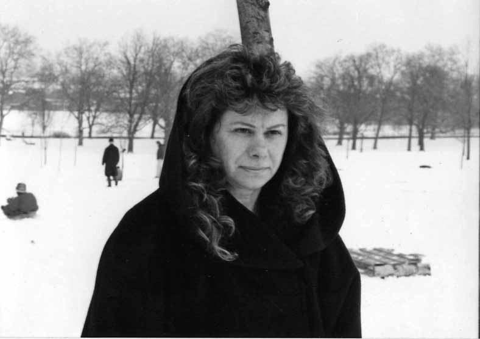

به شوهر گرانقدرم ، خانواده و دوستانم
شما را با قلبي مالامال از عشق و شادي ترك گفته ام، عشق و شادي نزديكي با شما.
سپاسگزار زندگيم، سپاس داشتن حانواده ام، دوستانم، كار و توانايي رويارويي با مرگ. همين موجبات را براي شما آرزو ميكنم.
در آخرين دوران زندگي دريافتم كه ترس، واهمه، خشم، و كنترلي كه ما در تمامي زندگي، هر روز به آن مي چسبيم چه كاذب است و چگونه در عرض دقايقي كوتاه ميتوان از آن رهايي يافت. غباري است كه زندگي واقعي ما در پشت آن جريان دارد. چه خوش اقبال بودم كه زندگي واقعي در پس اين پرده غبار را تجربه كردم و به اين دليل مي توانم اين انديشه ها را در نهايت آرامش و شادي بنويسم. تنها غصه ام اين است كه مرگ من بي شك بر پدر و مادر سالمندم سخت اثر خواهد كرد.
از سروش، خانواده، دوستان و خويشان نزديكم ميخواهم كه مرگ مرا بپذيرند و زندگي را با ياد من در دلشان از سر گيرند، ولي ميدانم از پدر و مادر سالمندم نميتوانم چنين انتظاري داشته باشم. اميدوارم با كمك شما آنها هم بتوانند چنين كنند، از اين فكر كه دوستشان دارم و آرزو دارم سلامت و شادان بزيند نيرو گرفته به زندگي ادامه دهند.
در اين ايام با بسياري از شما از آنچه حس كرده ام گفته ام. پس فقط چند آرزوي نهايي را باز گو مي كنم.
نخستين و مهمترين آرزويم اين است كه براي زمان غم و غصه نهايتي بگذاريد و از آن پس مرا و نزديكي مرا به خود نه به غم بلكه به شادي به ياد آوريد. مواظبتان خواهم بود كه آيا اين آخرين آرزوي مرا برميآوريد يا نه (البته كه روح من همانقدر اربابي منش است كه خود در زندگي بودم). هرآنگاه كه ميخنديد، از زندگي لذت ميبريد و شاديد، وجود مرا در درون خود حس ميكنيد. دلم ميخواهد همچنان با شما بمانم، پس لطفا شاد زندگي كنيد.
از زماني كه دانستم ديگر مداوايي نمانده كه دنبال كنم، آرامش دروني بسيار يافته ام. انگار كه از من دعوت كرده باشند كه راهي دنياي ديگري شوم. هر لحظه كه چشمم را ميبندم، صورتهاي دلپذير و خندان مي بينم. آنچنان آماده رفتنم كه تمام علايق اين دنيا از فكر و قلبم رخت بر بسته اند. همه تان را خيلي دوست دارم، ولي آن زمان كه هنگام رفتن باشد، آماده رفتنم.
دلم ميخواهد كه شما هيچ يك كوچكترين احساس پشيماني، گناه و خشم نسبت به بيماري و مرگ من نداشته باشيد. بپذيريد كه اين اتفاق مي توانست براي هركس در هر زمان رخ دهد، اينكه من بودم تصادفي بيش نبود.
زندگي ام كوتاه بود ولي گرانقدر؛ هيچ شكايتي از كوتاهي اش ندارم و سپاسمند زندگي ام. همه ما بالاخره روزي بايد با مرگ مواجه شويم. كيفيت زندگي نه كميت آن مهم است. يادتان باشد كه چه خوش اقبالم كه چنين آرامشي دارم و با خوشدلي سرنوشت خود را پذيرفته ام.
همه چيز طوري جور شده كه به اين آرامش برسم. بيشتر عمرم از خانواده ام دور بودم، ولي چنين شد كه آخرين سالهاي زندگي ام را در ميان آنها بگذرانم. در حلقه عشق و محبت خانواده و دوستانم محاصره بوده ام، و نوع بيماري ام چنان نبود كه درد بكشم. در آخر زندگي، آرام روزها گذرانده ام.
بقيه آرزو هايم در مورد امور عملي است و براي اطلاع اعضاي نزديك خانواده.
دوستتان دارم و با سپاسمندي از اينكه به شما نزديك بوده ام تركتان ميكنم.
پروين
سپتامبر 2005